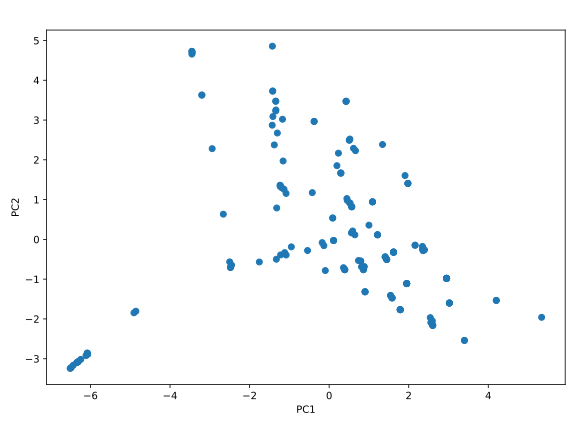

Hauptkoordinatenanalyse
Wie im letzten Kapitel beschrieben, ist die Hauptkoordinatenanalyse (engl. principal Coordinate Analysis, PCoA) ein Verfahren, welches die Hauptkomponenten des Datensatzes aus den Abständen zwischen den Datenpunkten bestimmt.
Theoretische Grundlagen
Damit wir am Ende die PCA durchführen können, benötigen wir eine Koordinatendarstellung der Datenpunkte . Nehmen wir zuerst an, dass wir eine solche Koordinatendarstellung durch eine magische Kraft erhalten haben. Dann können wir die an der zentrierten Datenmatrix die SVD durchführen () und erhalten die Projektion auf die Hauptkomponenten durch .
Betrachten wir nun die Gram-Matrix der zentrierten Datenmatrix , die durch gegeben ist. Setzen wir die SVD von ein, so erhalten wir ganz nach Gl. (4.7). Die Projektion der Datenpunkte auf die Hauptkomponenten kann also aus der Eigenwertzerlegung der Gram-Matrix berechnet werden als .
Setzen wir nun Gl. (4.8) in die Definition der zentrierten Gram-Matrix ein, so erhalten wir wo wir die Gram-Matrix der unzentrierten Datenmatrix als definiert haben. Dieser Prozess wird als Double Centering bezeichnet, da wir von der Matrix sowohl die Zeilen- als auch die Spaltenmittelwerte durch und abziehen, und dann den Mittelwert der gesamten Matrix, der doppelt abgezogen wurde, durch wieder hinzufügen. Die Matrix hat also 0 als Spalten- und Zeilenmittelwert.
Das ist zwar schön und gut, dass wir aus den unverarbeiteten Datenkoordinaten die Hauptkomponenten berechnen können, aber wie müssen erst (ohne Magie) die Koordinaten erhalten. Wir betrachten nun das was wir haben: die Abstände zwischen den Datenpunktpaaren. Diese lassen sich in einer symmetrischen -Matrix mit den Elementen speichern, wobei den Abstand zwischen den Datenpunkten und angibt. Des Weiteren nehmen wir an, dass die euklidischen Abstände zwischen den Datenpunkten gegeben sind. Damit gilt wobei wir den Kosinussatz verwendet haben. Das Skalarprodukt der zentrierten Datenpunkte und ist gerade das Element der zentrierten Gram-Matrix .
Wenn wir die Matrix der quadrierten Abstände durch definieren, so unterscheidet sich von der zentrierten Gram-Matrix nur durch einen Zeilen- und einen Spaltenmittelwert. Führt man das Double Centering auf durch, so erhält man die Matrix : Das ist genau die “magische Kraft”, die wir benötigen, um die Abstände in Koordinaten umzuwandeln. Es ergibt sich der folgende Algorithmus:
- Berechne die Matrix der quadrierten Abstände.
- Führe das Double Centering auf durch.
- Berechne die Eigenwertzerlegung von als .
- Berechne projizierten Koordinaten auf die Hauptkomponenten mit . Dieser Algorithmus wird als Principal Coordinate Analysis (PCoA) bezeichnet.
Damit ist PCoA äquivalent zur PCA, wenn der Abstand zwischen den Datenpunkten euklidisch ist. Verwendet man aber eine andere Abstandsmetrik, so liefert die PCoA andere Projektionen der Datenpunkte als die PCA. In diesem Fall ist die erhaltene Projektion oft eine gute Approximation der opti
Es sei noch angemerkt, dass die PCoA zu einer Familie von Verfahren gehört, die als
Multidimensionale Skalierung
Die Multidimensionale Skalierung (engl. Multidimensional Scaling, MDS) versucht, eine Koordinatendarstellung von Datenpunkten in Dimensionen zu finden, so dass die Abstände zwischen den Datenpunkten möglichst gut erhalten bleiben. Sei also der Abstand zwischen dem -ten und -ten Datenpunkt in den ursprünglichen Koordinaten durch und ihre Koordinaten im -dimensionalen Raum durch und gegeben. Dann wird der Stress-Wert durch die MDS minimiert. Hier wurde die genaue Abstandsmetrik für die Berechnung von und die Norm für die Berechnung der Distanz zwischen den Koordinaten und nicht angegeben, da die MDS für beliebige Metriken und Normen definiert werden kann.
Streng genommen ist die PCoA keine MDS, auch wenn die in diesem Kontext als Klassische MDS (CMDS) bezeichnet wird. Es liegt daran, dass die PCoA den Strain-Wert minimiert. Diese Funktion ist nicht äuquivalent zum Stress-Wert der MDS. Aber weil die Idee des Strain-Werts sehr ähnlich zum Stress-Wert ist, wird die PCoA oder die CMDS oft als eine variante der MDS betrachtet.
Implementierung
Für die Implementierung der PCoA nehmen wir ein Beispieldatensatz ohne Koordinaten, die auf dem ersten Blick sinnvoll erscheinen: der GDB-9 Datensatz, bestehend aus 133885 kleinen organischen Molekülen aus den Atomen H, C, N, O, F bis zu einer Größe von 9 schweren Atomen. Damit die Anzahl der Datenpunkte nicht zu groß wird, wählen wir nur eine Untermenge dieses DAtensatztes aus: alle Moleküle aus den Atomen H, C, N, O mit maximal 5 schweren Atomen. Das liefert uns einen Datensatz mit 177 Molekülen, der hier heruntergeladen werden kann.
Die SDF (Structure Data File) stellt eine Sammlung von Molekülen in Format der MDL Molfile dar. Ein Beispielmolekül aus der Datei sieht wie folgt aus:
gdb_4
-OEChem-03231823253D
C2H2
4 3 0 0 0 0 0 0 0999 V2000
0.5995 0.0000 1.0000 C 0 0 0 0 0 0 0 0 0 0 0 0
-0.5995 0.0000 1.0000 C 0 0 0 0 0 0 0 0 0 0 0 0
-1.6616 0.0000 1.0000 H 0 0 0 0 0 0 0 0 0 0 0 0
1.6616 0.0000 1.0000 H 0 0 0 0 0 0 0 0 0 0 0 0
1 2 3 0 0 0 0
1 4 1 0 0 0 0
2 3 1 0 0 0 0
M END
Die Moleküle hier werden durch die Koordinaten ihrer Atome beschrieben. Für die Konvinienz sind auch die kovalenten Bindungen zwischen den Atomen sowie den Bindungstypen gegeben. Im obigen Beispiel sehen wir, dass es zwischen Atom 1 (C) und Atom 2 (C) eine Bindung vom Typ 3 (Dreifachbindung) gibt, und zwischen Atom 1 (C) und Atom 4 (H) sowie Atom 2 (C) und Atom 3 (H) Bindungen vom Typ 1 (Einfachbindung) existieren. Wir können die Informationen der vorhandenen kovalenten Bindungen nutzen, um ein Molekül darzustellen.
Als erstes importieren wir wieder die benötigten Bibliotheken:
import numpy as np
import matplotlib.pyplot as plt
from matplotlib.offsetbox import AnnotationBbox, OffsetImage
from rdkit import Chem
from rdkit.Chem import Draw
Das Modul rdkit wird benötigt, um die Moleküle aus der SDF-Datei zu lesen
und später darzustellen. Dieses kann mit dem Befehl
mamba install -c conda-forge rdkit
installiert werden.
Danach definieren wir die konstante DATASET als Pfad zur SDF-Datei und ein
Dictionary BOND_TYPES mit den Bindungstypen, die wir berücksichtigen wollen:
DATASET = 'gdb9_subset_5.sdf'
BOND_TYPES = {
'CC1': 0, 'CC2': 1, 'CC3': 2, 'CC4': 3,
'CN1': 4, 'CN2': 5, 'CN3': 6, 'CN4': 7,
'CO1': 8, 'CO2': 9, 'CO3': 10, 'CO4': 11,
'NN1': 12, 'NN2': 13, 'NN3': 14, 'NN4': 15,
'NO1': 16, 'NO2': 17, 'NO3': 18, 'NO4': 19,
'OO1': 20, 'OO2': 21, 'OO3': 22, 'OO4': 23,
}
Wir haben hier jeden Bindungstyp durch die Symbole der beiden beteiligten Atome (in alphabetischer Reihenfolge) mit einer Zahl kodiert. Die Molfile-Spezifikation schreibt folgende Kodierung für die Bindungstypen vor:
| Kodierung | Bindungstyp |
|---|---|
| 1 | Einfachbindung |
| 2 | Doppelbindung |
| 3 | Dreifachbindung |
| 4 | Aromatische Bindung |
| 5 | Einfach- oder Doppelbindung |
| 6 | Einfachbindung oder Aromatische Bindung |
| 7 | Doppelbindung oder Aromatische Bindung |
| 8 | beliebige Bindung |
Wir verwenden hier die Kodierungen 2, 3 und 4 wie in der Molfile-Spezifikation, aber die Kodierung 1 für die Einfachbindung und alles andere, was nicht 2, 3 oder 4 ist aus Einfachheit.
Unser Dictionary in diesem Fall berücksichtigt also alle Bindungstypen zwischen schweren Atomen (C, N, O) und ignoriert Bindungen mit Wasserstoffatomen. Das Dictionary vergibt für jede Bindung eine Zahl, die später als Index für ein Array verwendet wird, das die Anzahl der Bindungen jedes Typs speichert.
Danach definieren wir die Funktion get_fingerprint, die die oben
beschriebene Darstellung eines Moleküls implementiert:
def get_fingerprint(mol):
fingerprint = np.zeros(len(BOND_TYPES), dtype=np.int32)
for bond in mol.GetBonds():
sym1 = bond.GetBeginAtom().GetSymbol()
sym2 = bond.GetEndAtom().GetSymbol()
rd_btype = bond.GetBondType()
if rd_btype == Chem.rdchem.BondType.DOUBLE:
btype_num = 2
elif rd_btype == Chem.rdchem.BondType.TRIPLE:
btype_num = 3
elif rd_btype == Chem.rdchem.BondType.AROMATIC:
btype_num = 4
else:
btype_num = 1
btype = ''.join(sorted([sym1, sym2])) + str(btype_num)
if btype in BOND_TYPES:
fingerprint[BOND_TYPES[btype]] += 1
return fingerprint
Hierbei wird zuerst ein Nullarray fingerprint mit der Länge der
Anzahl der Bindungstypen in unserem Dictionary BOND_TYPES erstellt. Da
dieses Array die Anzahl der Bindungen von jedem Typ speichern soll,
wählen wir np.int32 als Datentyp. Danach iterieren wir über die Bindungen
mit der GetBonds()-Methode des Molekülobjektes vom Modul rdkit. In jeder
Iteration extrahieren wir die Symbole der beteiligten Atome und setzen unsere
Kodierung der Bindungstyp durch den if-Block. Am Ende sortieren wir die
Symbole der Atome alphabetisch und hängen die Kodierung daran. Das liefert
uns eine Zeichenkette vom gleichen Stil wie die im Dictionary BOND_TYPES.
Falls der Bindungstyp im Dictionary vorhanden ist, erhöhen wir den
entsprechenden Eintrag im Array fingerprint um 1. Am Ende geben wir das
Array zurück.
Nun können wir die Moleküle aus dem Datensatz einlesen und ihre
Repräsentationen mit der Funktion get_fingerprint berechnen:
mols = [mol for mol in Chem.SDMolSupplier(DATASET)]
fingerprints = np.array([get_fingerprint(mol) for mol in mols])
Danach erfolgt die Berechnung der Abstandsmatrix. In diesem Fall ist es sinnvoll, die Anzahl der unterschiedlichen Bindungen zwischen den Molekülen als Abstand zu verwenden. Wir bilden also die Differenz der Fingerprint-Arrays und zählen die Absolutwerte der Unterschiede zusammen:
n = len(fingerprints)
distances = np.zeros((n, n))
for i in range(0, n):
for j in range(i + 1, n):
distances[i, j] = np.sum(np.abs(fingerprints[i] - fingerprints[j]))
distances[j, i] = distances[i, j]
Nach dem Initialisieren der Abstandsmatrix distances mit Nullen iterieren
wir die Index i über die Anzahl der Moleküle und die Index j von i + 1
bis zur Anzahl der Moleküle. Es wird also nur die strikte obere Dreiecksmatrix
der Abstandsmatrix berechnet. Das ist aber ausreichend, weil die
Abstandsmatrix symmetrisch ist mit Nullen auf der Diagonalen. Nach der
Berechnung des Abstandes in jeder Iteration setzen wir sowohl das Element
distances[i, j] als auch distances[j, i] auf den berechneten Wert.
Jetzt können wir die PCoA gemäß dem oben beschriebenen Algorithmus durchführen:
c_mat = np.eye(n) - np.ones((n, n)) / n
b_mat = -0.5 * np.linalg.multi_dot([c_mat, distances**2, c_mat])
e, v = np.linalg.eigh(b_mat)
embedding = np.dot(v[:, -2:], np.diag(np.sqrt(e[-2:])))
Bei der Projektion haben wir hier die letzten beiden Eigenwerten und
Eigenvektoren verwendet, da die Eigenwerte aus np.linalg.eigh in
aufsteigender Reihenfolge sortiert sind.
Für die PCoA können wir wie bei der PCA auch eine Art Varianzanteil definieren: Die Heaviside-Funktion liefert eine 1, wenn ihr Argument größer gleich Null ist, und 0 sonst. Deshalb wird in der obigen Formel nur über die positiven Eigenwerte summiert. In diesem Fall wird über 50 % der Varianz durch die ersten beiden Hauptkomponenten erklärt:
eta = np.sum(e[::-1][:2]) / np.sum(e[e > 0])
assert np.isclose(eta, 0.50722839)
print(eta)
Wir können die projizierten Datenpunkte nun visualisieren:
fig, ax = plt.subplots(figsize=(8, 6))
ax.scatter(embedding[:, 1], embedding[:, 0])
ax.set_aspect('equal')
ax.set_xlabel('PC1')
ax.set_ylabel('PC2')
fig.tight_layout()
plt.show()
Das Diagramm sollte wie folgt aussehen: 
Weil die PCoA den Abstand zwischen den Datenpunkten möglichst gut erhält,
kann man in der Projektion näherungsweise den Abstand zwischen den Molekülen
als Unähnlichkeitsmaß interpretieren. Das bedeutet, dass Moleküle, die
nahe beieinander liegen, ähnliche Strukturen haben sollten. Im obigen
Diagramm erkennen wir zwar, dass einige Punkte am Rand vereinzelt auftreten
und einige Punkte in der Mitte häufen, aber die Struktur der Moleküle
ist nicht dargestellt. Mit etwas mehr Aufwand lässt sich einen interaktiven
Plot erstellen, der die zugehörige Struktur des Punktes, auf welchem die
Maus gerade steht, anzeigt. Wichtig ist hierbei, dass das scatter-Objekt
als eine Variable gespeichert wird, damit wir für die Interaktivität ihre
Information verwenden können. Sie müssen diesen Teil des Codes nicht
im Detail verstehen, aber es lohnt sich, ihn auszuprobieren:
fig, ax = plt.subplots(figsize=(8, 6))
sc = ax.scatter(embedding[:, 1], embedding[:, 0])
ax.set_aspect('equal')
ax.set_xlabel('PC1')
ax.set_ylabel('PC2')
fig.tight_layout(rect=[0.0, 0.0, 0.9, 0.9])
imagebox = OffsetImage(np.zeros((100, 100, 3)), zoom=0.5)
imagebox.image.axes = ax
ab = AnnotationBbox(
imagebox, (40, 40), xycoords='data',
boxcoords="offset points", arrowprops=dict(arrowstyle="->"),
)
ax.add_artist(ab)
def update_annotation_box(idx):
ab.xy = (embedding[idx, 1], embedding[idx, 0])
mol = mols[idx]
Chem.rdDepictor.Compute2DCoords(mol)
img = Draw.MolToImage(mol, size=(100, 100), wedgeBonds=False)
ab.offsetbox.set_data(img)
def hover(event):
vis = ab.get_visible()
if event.inaxes == ax:
cont, ind = sc.contains(event)
if cont:
update_annotation_box(ind['ind'][0])
ab.set_visible(True)
fig.canvas.draw_idle()
else:
if vis:
ab.set_visible(False)
fig.canvas.draw_idle()
fig.canvas.mpl_connect('motion_notify_event', hover)
plt.show()
Die Interpretation der resultierenden Abbildung ist dem Lesenden überlassen.
Übung
Aufgabe 4: PCoA und Molekulare Fingerprints
In Kapitel 4.4. haben Sie gesehen, wie die Hauptkoordinatenanalyse (PCoA) dazu verwendet werden kann, um eine niedrigdimensionale Darstellung eines Datensatzes basierend auf Distanzen zwischen den Datenpunkten zu erhalten. Dabei ist die Wahl der Repräsentation der Datenpunkte entscheidend für die Qualität der Darstellung.
(a) Erweitern der Molekularen Fingerprints
Ergänzen Sie Ihre Implementierung der PCoA des GDB-9 Datensatzes, sodass die Fingerprints der Moleküle
auch Bindungen von schweren Atomen zu Wasserstoffatomen enthalten. Erweitern Sie dazu lediglich das Dictionary
BOND_TYPES und verwenden Sie die rdkit-Funktion
Chem.AddHs(mol) um Wasserstoffatome hinzuzufügen.
Wie interpretieren Sie die Ergebnisse?
(b) Entwerfen von neuen Fingerprints
Wie Sie in (a) gesehen haben, ist das Ergebis der PCoA stark abhängig von der Wahl der Repräsentation der Datenpunkte. Nutzen Sie Ihre chemische Intuition, um weitere geeignete Fingerprints zu entwerfen und testen Sie sie anhand des GDB-9 Datensatzes.